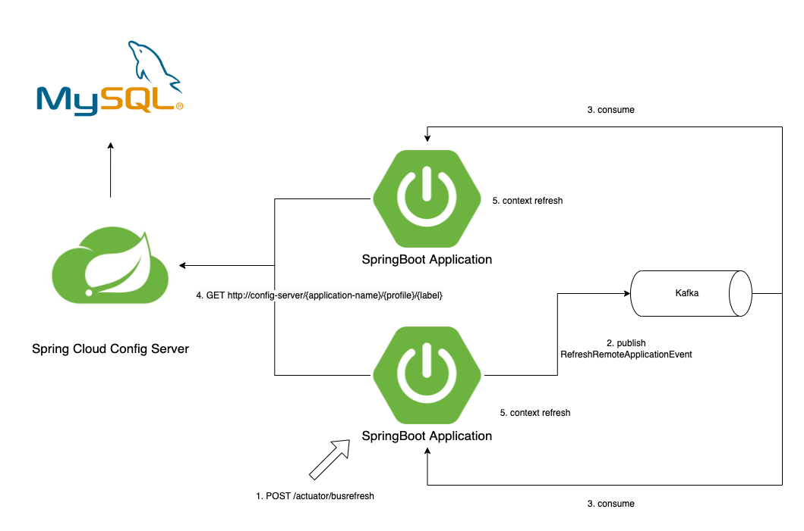

들어가며
해당 글에서 사용한 예제의 버전 정보는 아래와 같습니다
- kotlin 1.6.0
- Spring Boot 2.6.3
- Spring Cloud Dependencies 2021.0.1
Spring Cloud Config 관련 글은 총 4개의 글로 작성되었습니다.
- Spring Cloud Config 시작하기
- Spring Cloud Bus 시작하기
- Spring Cloud Config Monitor 시작하기
- Spring Cloud Config 주기적으로 Polling 하기
Spring Cloud Bus

- 하나의 클라이언트에서 context refresh가 발생하게 되면 Message Broker를 통해 이벤트를 다른 클라이언트에 전파합니다.
- 이벤트를 수신한 다른 클라이언트도 context refresh를 수행하게 되어 모든 클라이언트에 대해 context refresh가 일어나게 됩니다.
- Spring cloud config bus는 AMQP를 사용하여 Message Broker를 통해 이벤트를 fan-out 합니다.
kafka, rabbitmq와 같은 Message Broker를 지원합니다.
설정하기
1. build.gradle
1 | dependencies { |
- spring-cloud-starter-bus-kafka
- kafka를 이용해 spring cloud bus를 사용하기 위해 추가합니다.
- config client, server에 모두 추가합니다.
2. application.yml (config-server)
1 | spring: |
spring.cloud.bus.destination- 이벤트를 전파 할 kafka topic을 지정합니다.
spring.kafka.bootstrap-servers- 이벤트를 전파 할 카프카 클러스터 주소를 지정합니다.
3. application.yml (client)
1 | management: |
management.endpoints.web.exposure.include=refresh, busrefresh- busrefresh 엔드포인트를 노출하기 위해 추가하였습니다.
- spring boot 2.4 미만 버전에서는 bus-refresh 엔드포인트를 사용합니다.
spring.cloud.bus.destination- 이벤트를 전파 받을 kafka topic을 지정합니다.
spring.kafka.bootstrap-servers- 이벤트를 전파 받을 카프카 클러스터 주소를 지정합니다.
하나의 클라이언트에 context refresh를 해보겠습니다
호기롭게 POST http://client1/actuator/refresh API를 호출 해보았습니다.
1번 클라이언트는 잘 갱신이 되었습니다.
그러나…. 2번 클라이언트은 갱신이 안되었고, kafka topic에도 아무런 이벤트가 발생하지 않았습니다.
무슨 이유일까요?
POST http://client1/actuator/refresh 도 클라이언트에 대한 context refresh를 수행해 주지만,
RefreshRemoteApplicationEvent를 Message Broker에 퍼블리싱 하지 않습니다.
그렇기 때문에 다른 클라이언트는 설정이 갱신이 되지 않았던 것입니다.
다시! 클라이언트에 context refresh를 해보겠습니다.
이번엔 POST /actuator/busrefresh 라는 API를 호출해 보았습니다.
이번에도 클라이언트1은 갱신이 잘됐습니다.
아까와는 다르게 클라이언트1만 갱신했는데 클라이언트2도 갱신이 되었습니다!
kafka topic을 컨슘해보니 처음보는 데이터가 들어와 있습니다.
1 | { |
- 첫번째 데이터는 클라이언트1에서
RefreshRemoteApplicationEvent를 publish 했습니다. - 두번째 데이터는 클라이언트1에서 RefreshRemoteApplicationEvent를 수신했다고 ack 이벤트를 publish 해주었습니다.
- 세번째 데이터는 config-server에서도 RefreshRemoteApplicationEvent를 수신했다고 ack 이벤트를 publish 해주었습니다.
- 네번째 데이터는 클라이언트2에서 RefreshRemoteApplicationEvent를 수신했다고 ack 이벤트를 publish 해주었습니다.
이렇게 클라이언트1에만 갱신 요청을 해도 kafka로 연결된 모든 클라이언트에 이벤트가 전송되었고 ack 응답까지 kafka로 발행해 주었습니다.
여기서 이상한 점은 config-server도 ack를 하였다는 것인데요.
config-server는 RefreshRemoteApplicationEvent를 수신해도 클라이언트가 아니기 때문에 context refresh를 수행하지 않습니다.
config-server에는 이벤트를 적용하지 않는 방법은 없을까요?
특정 애플리케이션만 갱신하기
busrefresh 엔드포인트는 기본 /busrefresh 엔드포인트를 제공할 뿐만 아니라 destination 정보를 싣을 수 있는 엔드포인트를 제공합니다.

- 바로 /actuator/busrefresh/
엔드포인트입니다. - 이 엔드포인트는 아래처럼 사용할 수 있습니다.
/actuator/busrefresh/jaehun-microservice-router:8080:client1- 정확히 originService명이 jaehun-microservice-router:8080:client1 인 클라이언트에서만 갱신이 일어나도록 합니다.
/actuator/busrefresh/jaehun-microservice-router:8080- originService명이 jaehun-microservice-router:8080:* 인 모든 클라이언트에서 갱신이 일어나도록 합니다.
/actuator/busrefresh/jaehun-microservice-router- originService명이 jaehun-microservice-router:** 인 모든 클라이언트에서 갱신이 일어나도록 합니다.
한번 /actuator/busrefresh/jaehun-microservice-router를 호출해 보겠습니다
1 | { |
- destination이 jaehun-microservice-router로 시작하는 클라이언트에서만 ack 응답이 온 것을 확인할 수 있습니다.
- 내부적으로 destination name에 대한 regex 매칭을 통해 이름 형식이 맞는 지 확인 후 context refresh를 실행하게 됩니다.
질문 있어요~!
destination service의 이름은 어떻게 지어지나요?
spring cloud bus를 사용하는 클라이언트의 destination 이름은 아래의 링크를 확인 부탁 드립니다.
https://docs.spring.io/spring-cloud-bus/docs/current/reference/html/#addressing-an-instance
요약하자면..
{spring.application.name}:{server.port}:{vcap.application.instance_id} 의 형태로 지어 집니다.
vcap.application.instance_id환경 변수가 없는 경우 랜덤한 문자열이 들어갑니다.
Spring Cloud Bus의 기능을 살펴보았습니다.
근데 말이죠…
클라이언트 모듈에 대한 host와 endpoint를 따로 관리하지 않고 있기 때문에
프로퍼티 정보 갱신 후 클라이언트 1개에 /actuator/busrefresh를 호출하기가 어렵습니다.
어떻게 하면 좋을까요?
이런 고통과 고민을 덜어주기 위해 다음 글에서는 Spring Cloud Config Monitor라는 기능을 소개합니다.